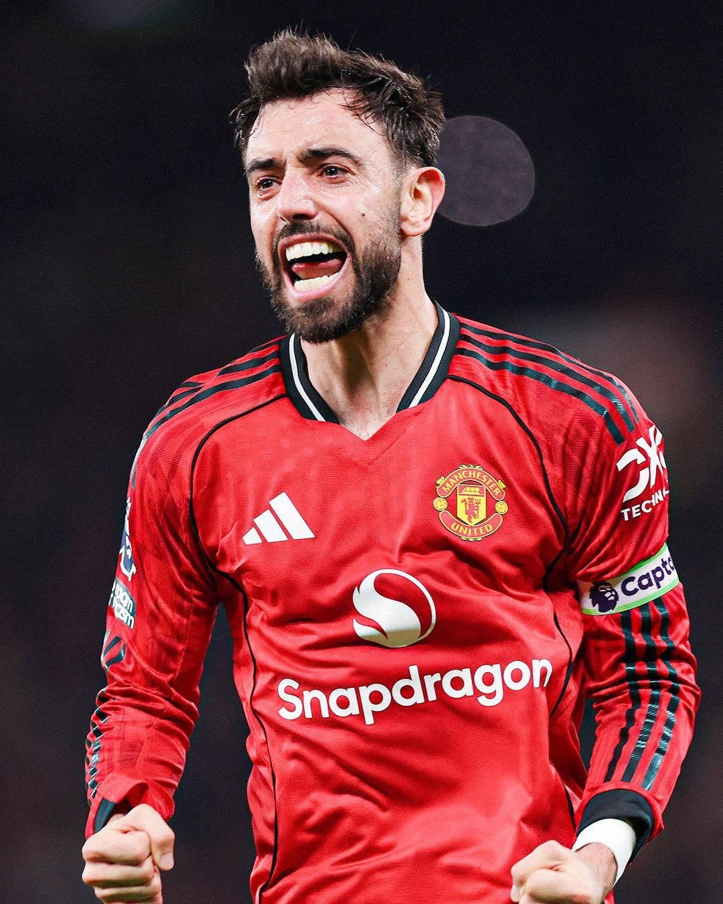

Manchester United at a Crossroads: Will Bournemouth Clash Decide Michael Carrick’s Future?
Sports
By Vanywinner KE | October 25, 2026
Manchester United are facing another difficult period, with growing questions about the team's performances and the future of manager Michael Carrick. As the club prepares to face Bournemouth, attention is shifting from the results on the pitch to a bigger question: does Carrick still have what it takes to lead United's recovery?
For a club with Manchester United's history and ambitions, poor results rarely remain a purely sporting issue. They quickly trigger debate among supporters, speculation in the media and questions about whether those in charge need to make significant changes.
However, amid the growing noise surrounding Old Trafford, it is important to separate what has been reported from what remains unconfirmed.
The pressure is mounting at Old Trafford
United's recent run of disappointing performances has intensified scrutiny of Carrick. The reported heavy defeat against Como has added to concerns about the team's defensive organisation, tactical approach and ability to compete consistently.
The problem is not simply losing a match. Supporters want to see evidence that the team is progressing, that players understand their roles and that the manager has a workable plan for difficult situations.
When disappointing results continue, confidence becomes harder to maintain. Every tactical decision attracts attention, every substitution invites debate and every subsequent fixture becomes an opportunity for the manager to prove that the situation can be turned around.
For Carrick, the Bournemouth match arrives at a particularly sensitive moment.
Is Manchester United preparing to sack Carrick?
Speculation about a possible managerial change has become a major talking point. Several reports have suggested that Carrick's position is under pressure and that the club could reconsider its options if results fail to improve.
Nevertheless, there is an important difference between a manager facing uncertainty and a club having made a final decision to dismiss him.
As of October 25, reports indicated that Carrick was expected to lead United against Bournemouth. There was no confirmed announcement establishing that he had been dismissed.
This means supporters should be cautious about claims circulating online that suggest his departure is already settled. Unless Manchester United or a reliable source confirms a decision, reports about an imminent sacking should be treated as speculation rather than established fact.
The club's silence, where applicable, should not automatically be interpreted as evidence that a dismissal is being planned.
Why the Bournemouth match matters
The meeting with Bournemouth offers United an opportunity to respond on the pitch rather than through statements or rumours.
A convincing victory could ease some of the pressure on Carrick and provide evidence that the players remain capable of executing his plans. More importantly, a good performance could give the team renewed confidence ahead of its next fixtures.
A disappointing result, on the other hand, would intensify questions about whether the current approach is producing meaningful progress.
Even then, one result would not necessarily determine Carrick's future. Club executives would need to consider the wider pattern of performances, the team's league position, the quality of play and whether there is a realistic alternative capable of improving matters.
For United, the challenge is to turn the match into the beginning of a recovery rather than another isolated result.
Who could replace Carrick?
Names such as Unai Emery and Julian Nagelsmann have been mentioned in discussions about possible alternatives. Antonio Conte has also featured in managerial speculation.
Their reputations and experience make them natural subjects of debate whenever a major club faces uncertainty in the dugout. However, being linked with a vacancy does not establish that a manager has been approached, that negotiations are taking place or that an appointment is imminent.
Any serious replacement decision would involve more than selecting a famous name. United would need to consider tactical compatibility, recruitment priorities, the existing squad and the manager's willingness to work within the club's structure.
A change could provide a fresh start, but it would not automatically resolve every problem affecting the team.
## The deeper question: What kind of Manchester United does the club want?
The uncertainty surrounding Carrick points towards a wider issue that extends beyond the manager.
United need a clear footballing direction. Recruitment must support the intended style of play, players must understand their responsibilities and the club's leadership must assess progress against realistic, consistent objectives.
Repeatedly changing managers without addressing structural weaknesses can create another cycle of rebuilding. A new coach may initially improve results, but lasting progress requires coordination between the manager, recruitment department and club executives.
If Carrick stays, he must demonstrate that he can restore consistency and build a team capable of meeting the club's expectations. If United decide to appoint someone else, the replacement must be given a coherent mandate rather than being expected to solve every problem immediately.
Either path demands accountability and a long-term plan.
What happens next?
Three broad possibilities remain open.
Carrick could use the Bournemouth fixture to begin rebuilding confidence and strengthen his position. United could improve their results while questions about their performances continue. Alternatively, further setbacks could increase the likelihood of a managerial change.
At this stage, these are possibilities, not confirmed outcomes.
The most useful indicators will be the team's performances over the coming matches, the club's official communications and credible reporting about any concrete decisions made by its leadership.
Verdict: Pressure is real, but a sacking is not a confirmed fact
Manchester United's struggles have created genuine uncertainty around Michael Carrick. The team's performances have invited criticism, and the Bournemouth fixture represents an important opportunity to respond.
But supporters and readers should distinguish between a manager being under pressure and a club officially ending his tenure.
Until a dismissal is confirmed, claims that Carrick has been sacked or that a replacement has already been appointed should not be presented as fact.
United's immediate priority is to improve on the pitch. Their longer-term challenge is to build a team and a footballing structure capable of delivering consistent results.
For Carrick, the coming fixtures could prove decisive. For Manchester United, however, the bigger test is whether the club can turn another period of uncertainty into a genuine and sustainable recovery.
Vanywinner KE will continue to follow developments at Old Trafford, separating confirmed news from speculation as the situation unfolds.